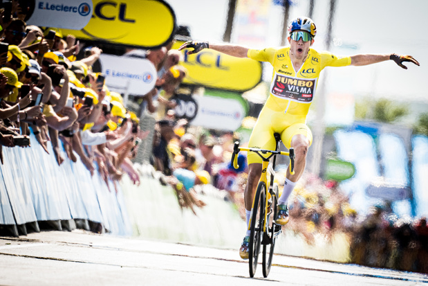

Wout van Aert
Op deze afbeelding zie je Wout van Aert die de 4de rit van de Tour de France 2022 wint. Wout wist in de gele trui de rit te winnen en hoe. De drie dagen ervoor waren een tijdrit en 2 sprints, Wout werd 3 keer 2de. In rit 4 moest het dan lukken. Het leek net als de vorige dagen een sprint te worden met alleen de helling op 10km van het einde. Op die helling zou mischien alleen een tempoversnelling zijn van een ploeg om de sprinters af te matten. Maar daar besliste Jumbo Visma anders over (de ploeg van Wout). Van Hooydonck was als eerste aan de beurt met een verschroende versnelling. Nog ongeveer 10 renners waren nog mee, alleen renners van Jumbo Visma en Ineos Grenadiers. Daarna was het aan Tiesj Benoot die nog harder te keer ging. Er waren nog maar 4 renners mee Tiesj, Wout, kopman van Jumbo Visma Vingegaard en kopman van Ineos Grenadiers Yates. Dan was het aan Wout van Mars. Vingegaard en Yates konden Wout niet volgen zo snel ging hij. Achter Wout kwam het peloton weer samen dus werd het voor de belg moeilijk op voorop de blijven. Maar het blijft Wout van Aert en niet Joske van achter de hoek. Hoe hard het peloton ook reed, Wout bleef het peloton voor en won de rit.
palmares
Criterium Herentals | 2022-07-28
Tour de France | puntenklassement 2022-07-24
Tour de France | strijdlustklassement 2022-07-24
Tour de France | stage 20 (ITT) 2022-07-23
Tour de France | stage 8 2022-07-09
Tour de France | stage 4 2022-07-05
Critérium du Dauphiné | Stage 5 2022-06-09
Critérium du Dauphiné | Stage 1 2022-06-05
E3 Saxo Bank Classic | 2022-03-25
Paris - Nice | Stage 4 (ITT) | 2022-03-09
Omloop Het Nieuwsblad | 2022-02-26
Tour of Britain | 2021-09-12
Tour of Britain | Stage 8 2021-09-12
Tour of Britain | Stage 6 2021-09-10
Tour of Britain | Stage 4 2021-09-08
Tour of Britain | Stage 1 2021-09-05
Tour de France | Stage 21 2021-07-18
Tour de France | Stage 20 (ITT) 2021-07-17
Tour de France | Stage 11 2021-07-07
National Championships Belgium | Road Race 2021-06-20
Amstel Gold Race | 2021-04-18
Gent-Wevelgem in Flanders Fields | 2021-03-28
Tirreno-Adriatico | Stage 7 (ITT) | 2021-03-16
Tirreno-Adriatico | Stage 1 2021-03-10
Tour de France | Stage 7 2020-09-04
Tour de France | Stage 5 2020-09-02
National Championships Belgium | ITT 2020-08-20
Critérium du Dauphiné | Stage 1 2020-08-12
Milano-Sanremo | 2020-08-08
Strade Bianche | 2020-08-01
Tour de France | Stage 10 2019-07-15
National Championships Belgium | ITT 2019-06-27
Critérium du Dauphiné | Stage 5 2019-06-13
Critérium du Dauphiné | Stage 4 (ITT) 2019-06-12
PostNord Danmark Rundt | Tour of Denmark 2018-08-05
PostNord Danmark Rundt | Tour of Denmark | Stage 2 2018-08-02
Grand Prix Cerami | 2017-07-19
Ride Bruges (Bruges Cycling Classic) | 2017-06-18
Ronde van Limburg | 2017-06-11
Schaal Sels | 2016-08-28
Baloise Belgium Tour | Proloog 2016-05-25